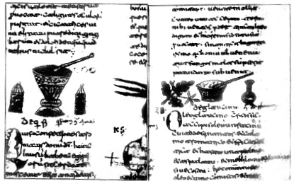

ŞEKİL 15. Monte Cassino Manastırı’nda 10. yüzyılda Latince yazılmış Dioskorides’in bir De materia medica nüshasındaki bu minyatürler, farmasötik gereçlerin en eski betimlerindendir. Soldakinde konik şekilli kapakları bulunan iki adet silindirik kap arasında bir havan, sağdakinde ise imbik şeklinde bir cam kabın yanında sürterek ezmeye yarayan bir kâse görülmektedir.42